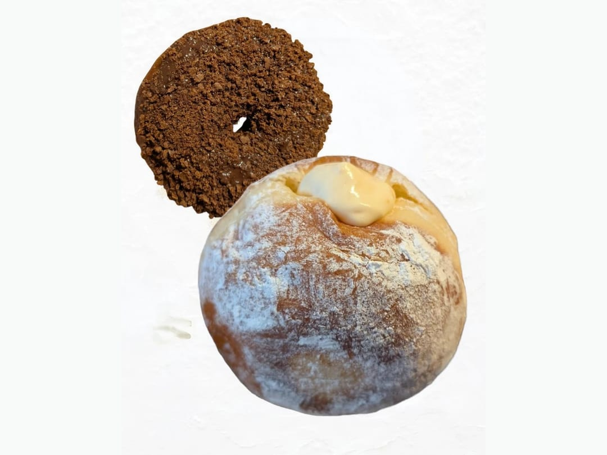
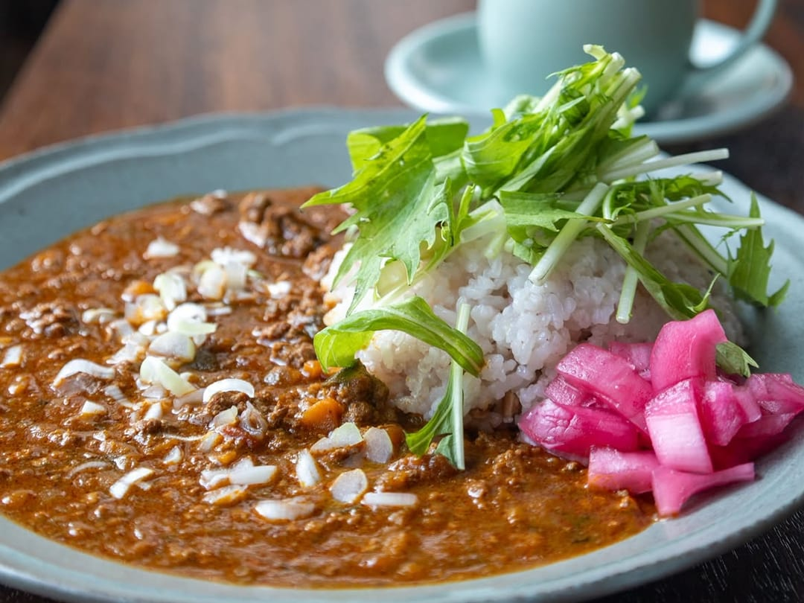
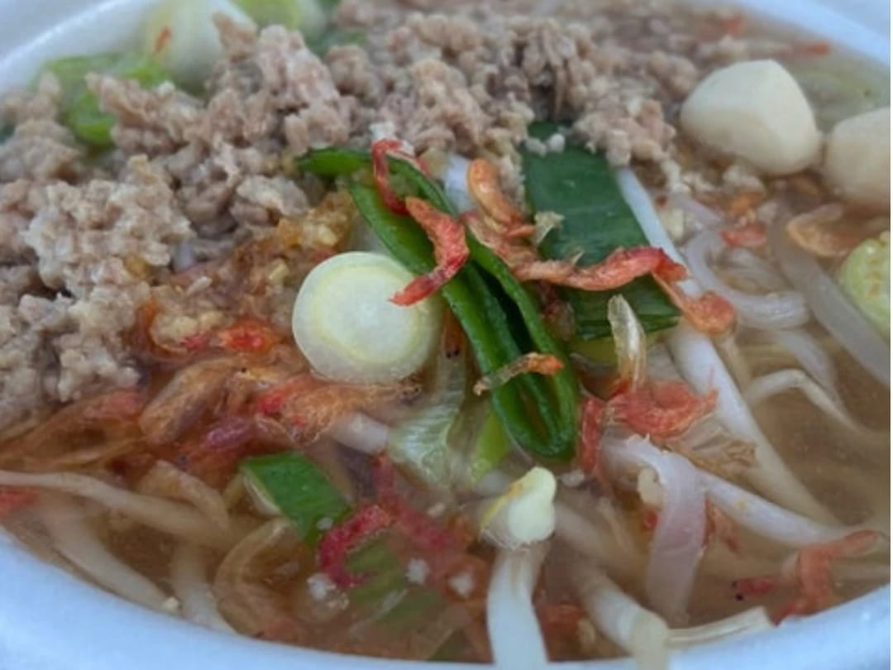
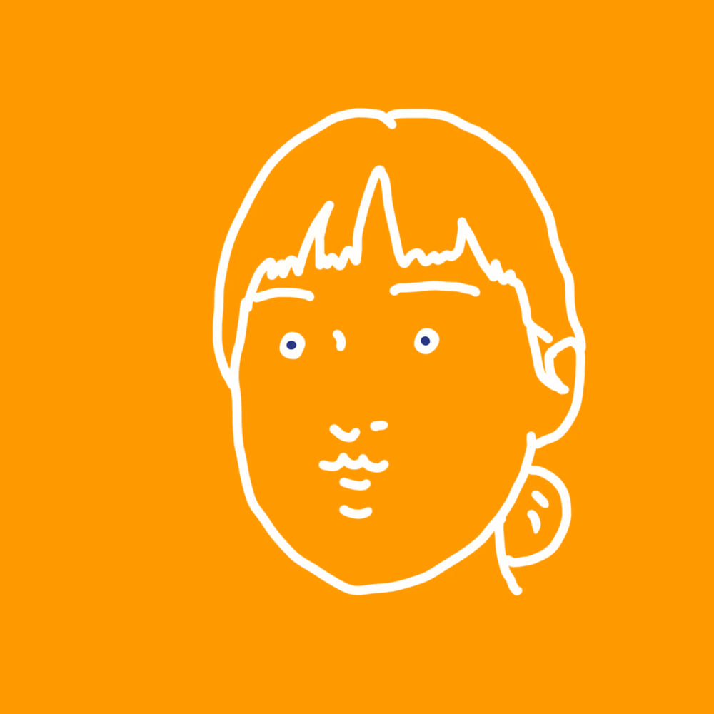
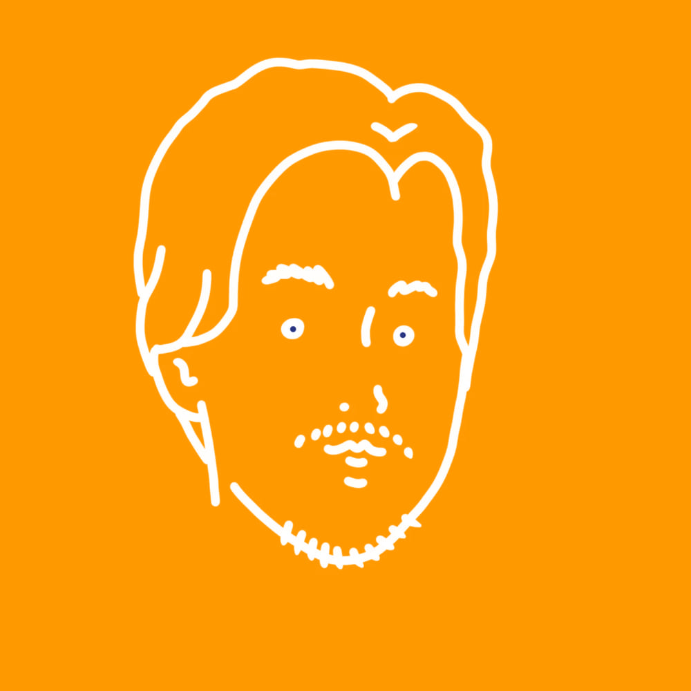
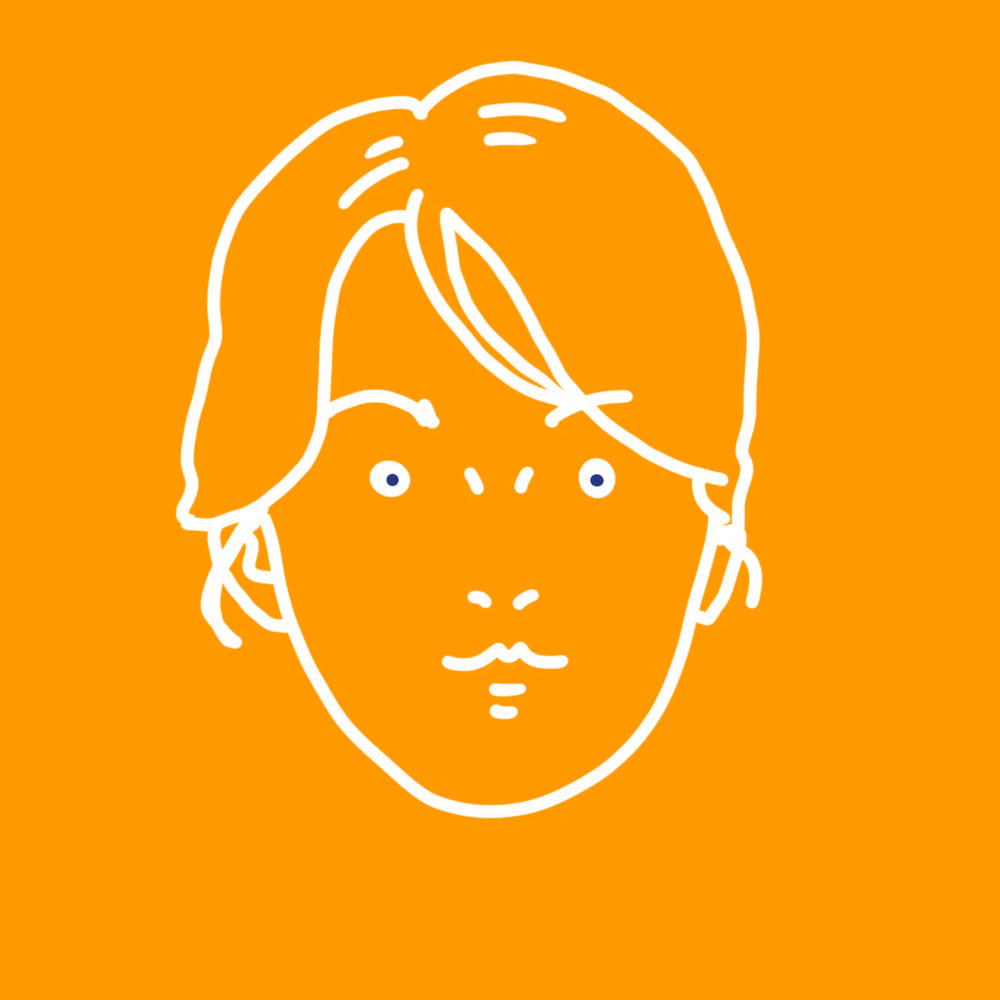
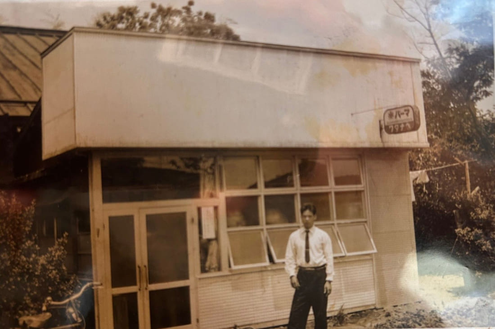
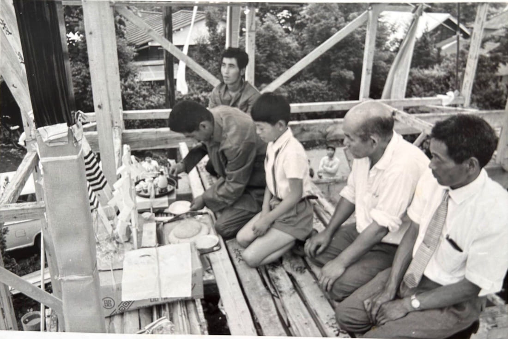
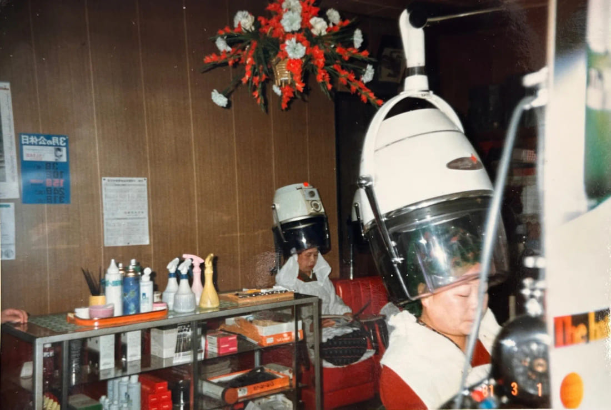
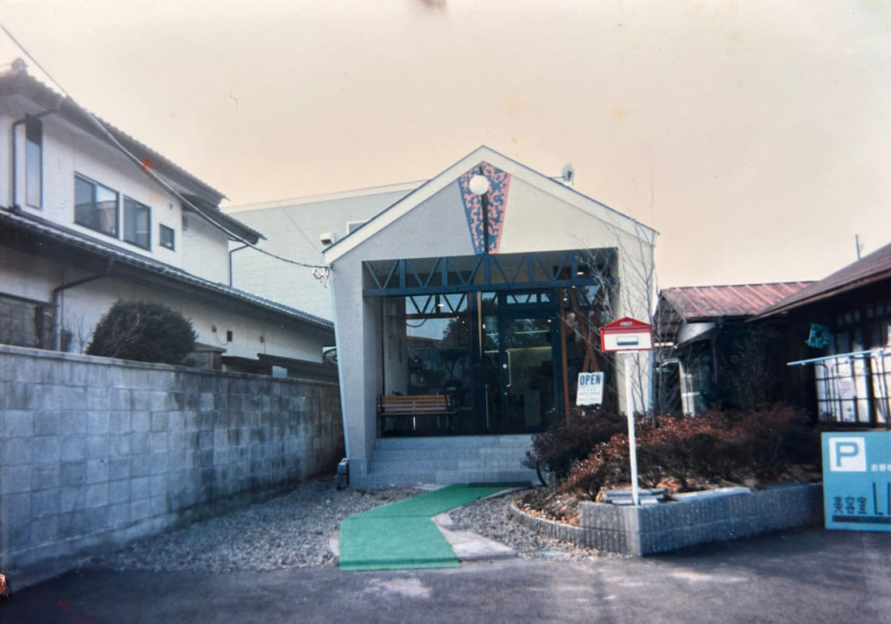

COFFEE
MYS,COFFEE
@315mys_coffee
Specialty coffee
ブルーチーズ入りバスクチーズケーキ
スコーン
HAIR SALON LABO — SINCE 1956
2026.10.31 SAT — 11:00-16:00
70年分のありがとうを。
MESSAGE FOR 70 YEARS
1956年の創業から、今年の12月で70年を迎えます。
祖母が創業し、父が受け継ぎ、現在に至ります。
そして、そのバトンを私たち姉弟で受け継いでいきます。
当時、女手１つで子供3人を育てながら店を立ち上げた祖母のヴァイタリティーには、改めて尊敬の念を抱かざるを得ません。
そして、祖母から受け継いだ父は、時代をキャッチするアンテナの高さ、変化への適応力があったからこそ、ここまで歩んでこられたのだと感じています。
私たちも、その想いや歴史を受け継ぎ、美容師としての進化はもちろん、地域に還元していけるよう私たちなりの歩みを進めてまいります。これからも変わらず応援していただけると嬉しいです。
何よりここまで歩んでこられたのは、通い続けてくださったお客様、今までLABOを支えてくれたスタッフ、そしてこの街のあたたかさがあったからにほかになりません。心からの感謝を込めて、まずはお礼をお伝えさせてください。
本当に、ありがとうございます。
この節目の年に、日頃の感謝を形にするため、少し早いですが2026年10月31日（土）、当店にて70周年感謝祭を開催いたします。音楽と、おいしい食べものと、LABOの70年をたどる小さな写真展。
肩ひじ張らない、お祭りのような一日をスタッフ一同で準備しています。
どうぞお気軽に遊びにいらしてください。
皆さまとお会いできることを、心より楽しみにしております。
WHAT'S ON 10.31
感謝を込めたspecialな一日をお届け★
フード＆ドリンク
01
店前がマルシェになります。おいしいお食事とともにお楽しみください。詳細は後ほど配信いたします。チェックをお忘れなく！
COFFEE
@315mys_coffee
Specialty coffee
ブルーチーズ入りバスクチーズケーキ
スコーン

DONUTS
@smallpocket22
ドーナツ各種

CURRY
@kissainn_arzte_karasuyama
アルッテ特製キーマカレー

NOODLE
タイラーメン
SPARERIBS
スペアリブ。店舗前で週に一度営業している、父のリヤカー屋台です。
アルコール、ノンアルコールドリンクをご用意しています。店頭でお配りしているチラシをご持参の方は、ドリンク1杯無料になります。
2026.10.31 SAT



感謝を込めて
スタッフから簡単なご挨拶。
LABOをご愛顧の皆様
いつもありがとうございます。
おかげさまで70周年を迎えられる事に、心より感謝申し上げます。
これからも技術を磨きながら、
3代目なりに、LABOに関わる皆様と一緒に楽しい空間をつくっていきたいと思います。
今後ともどうぞ宜しくお願い申し上げます。
周年祭当日も一緒に楽しみましょう♪
70周年、本当にありがとうございます！
今後は、祖母と両親が積み重ねてきた70年に、姉と僕なりの新しい色を足していけたらと思います。
行くぞ100周年！！
当日は様々な催し物をご用意していますので、ぜひ遊びにいらしてください。一緒に乾杯しましょー🍻
LABO70周年心よりおめでとうございます。
70周年という特別な節目を皆様と楽しく過ごせることをとても嬉しく思います。
これからも、たくさんの笑顔とご縁に恵まれ新たな歴史が紡がれていきますように。
お客様の温かい支えのおかげで創業70周年を迎えられることができました。
これほど長く続けてこられたのも何十年と通ってくださるお客様、家族2代、3代で通ってくださるお客様、皆様の支えがあったからです。心より感謝申し上げます。
時代が移り変わり、3代目の娘、息子を中心に新しい風を吹き込んでくれています。
今後とも、どうぞよろしくお願いいたします。
2代目としてこれまでやってこれました。ありがとう。
目が見えなくなってきたし、耳も聴こえなくなってきたし、いろいろ指摘される事が多すぎて覚えてられないし…。
あと32年、100歳まで仕事をするにはどうすれば良いでしょうか？
今後ともよろしくお願いします。
HISTORY
写真で辿る、LABOの70年。仮
1956'56

1956
昭和31年
祖母が創業。女手ひとつで子供3人を育てながら、この街に店を構える。
1960s'60s
1960s
昭和35年〜
※年表データ待ち
旧店舗旧店
旧店舗
上町の旧店舗。
1970s'70s

1970s
昭和45年〜
※撮影年不明
1980s'80s

1980s
昭和55年〜
父が受け継ぐ。時代をキャッチするアンテナの高さと、変化への適応力。
1990s'90s
1990s
平成2年〜
※年表データ待ち
2000s'00s

2000s
平成12年〜
※年表データ待ち
2010s'10s
2010s
平成22年〜
※年表データ待ち
2026.10.31'26
2026
令和8年
姉弟がバトンを受け継ぐ。感謝祭が終わったら、この日の写真をここに入れる。告知サイトが、記録サイトに変わります。
SPECIAL THANKS
#70年分のありがとうを込めて。